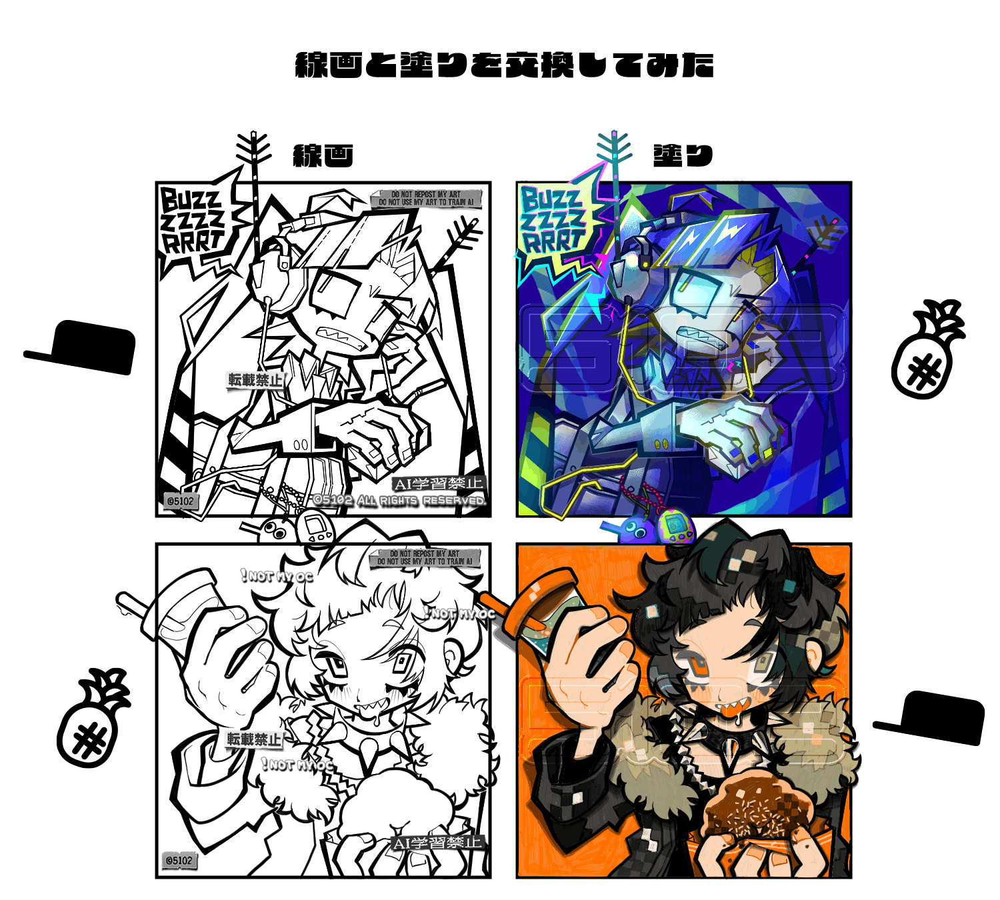

長い付き合いの友人（
LUBORA）氏と線画交換をしてお互い塗ってみた！！テンプレートはLUBORA氏が作ってくれました。
実は誰かと線画交換するのって初めてで、絵描きとして今までずっとやってみたかった事なんだよな。
自分の線画なのに自分の塗りじゃない？！自分の線画じゃないのに自分の塗り？！この不思議な感覚がクセになりそうだ。これはマジで、絵描きだけに許された贅沢な贅沢な娯楽だ。
たまごっちが初代っぽい柄で塗られているのが嬉しい。よく見ると、たまごっちの画面内になんかいる…。
はっきりとしたベタと、繊細なカケアミを使い分けてハイライトや陰影を入れるのがLUBORA氏の画風なのだが、それが自分の描いた線画でも同じように発揮されていると見ていて飽きない！ヘッドホンの光沢がかっこよすぎて触りたい。
せっかくなので、今回描いた私の線画は配布する。死ぬほど塗り絵がしたくて気が狂いそうな人だけダウンロードしていいよ！
5102lineart.png（122kb）
ちなみに彼女は蚊をモチーフにした女の子である。とても邪魔そうなアンテナがヘッドホンから生えている。
2026/09/30
 友人と線画交換した
友人と線画交換した